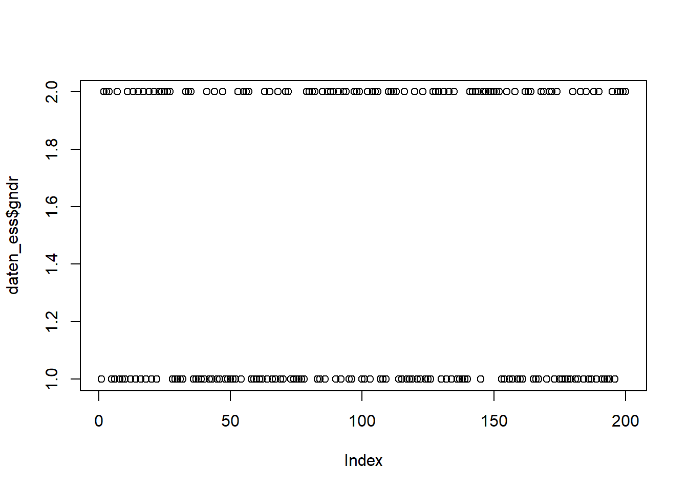
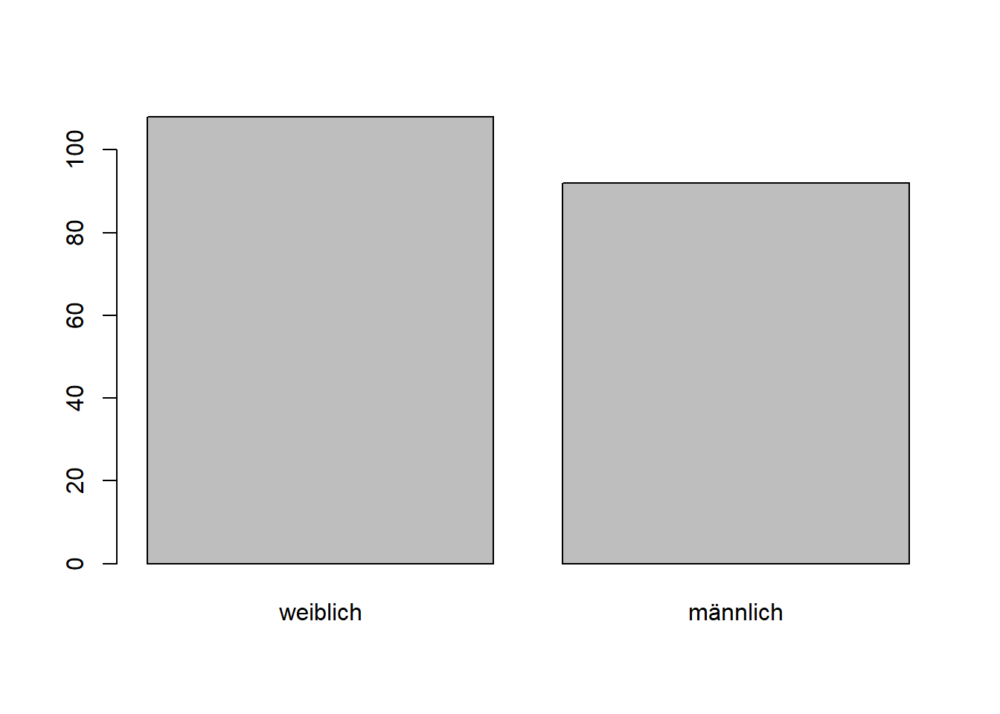
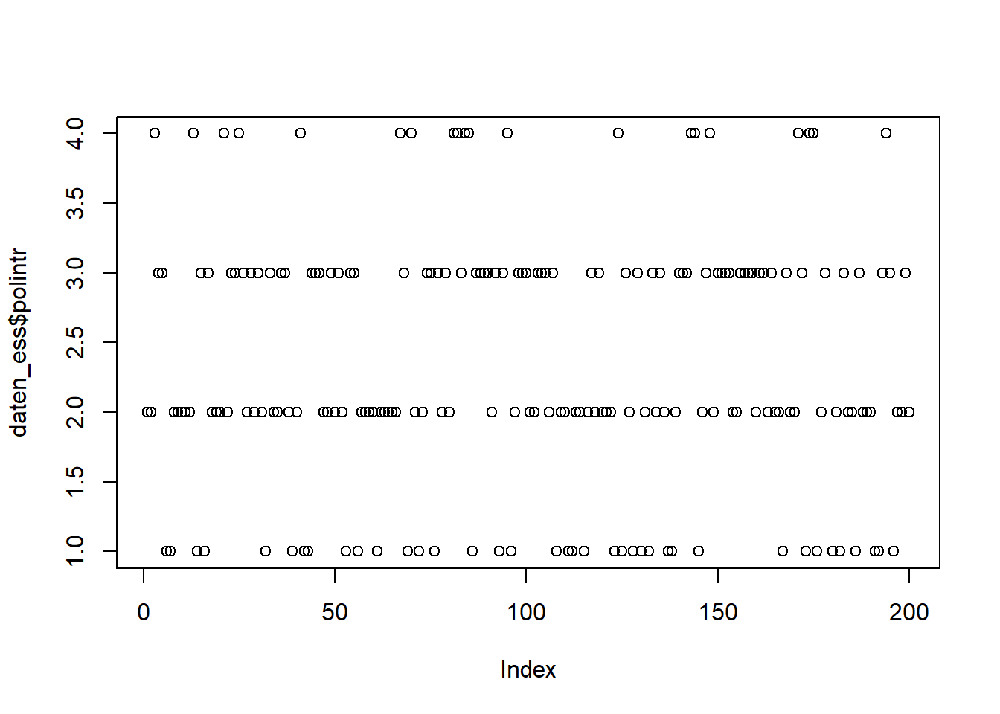
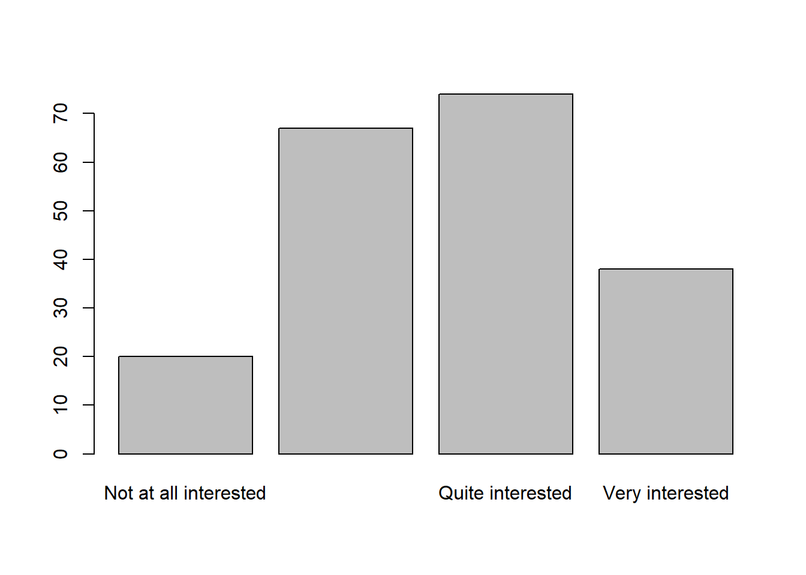

8 Wochenplan 08
…zur Einheit der 08. auf die 09.Woche.
8.1 Lernziele
Nachdem wir uns bereits etwas mit dem ESS-Datensatz und dessen Struktur vertraut gemacht haben, gehen wir nun zur Datenanalyse in R über. Dieser Übergang ist ein fliessender: Die Schritte zum Kennenlernen eines Datensatzes, die Plausibilitätsprüfung und die Suche nach Fehlern liefern häufig bereits erste Ergebnisse im Sinne einer explorativen Datenanalysen, die umgekehrt dann womöglich neue Schritte zur Aufbereitung des Datensatzes veranlassen. Der 08. Wochenplan fokussiert die Rolle von Kreuztabellen in diesem Prozess, inklusive der Berechnung von Chi-Quadrat-Tests. Von hier geht es dann in den Folgewochen schrittweise weiter zu Berechnung von Regressionsanalysen.
Wir können daher folgende Lernziele festhalten:
- Sie verstehen den Nutzen (und auch die Gefahren) der Funktion
attach(). - Sie können Kreuztabellen auf verschiedene Weisen darstellen und inhaltlich zutreffend interpretieren.
- Sie lernen die Interpretation von inferenzstatstischen Test in R anhand von einem Chi-Quadrat Test kennen.
- Sie verstehen, wie man das Ergebnis von Funktionen als Objekt “abspeichert,” und wissen, wie man auf die Elemente solcher “Ergebnisobjekte” zugreift.
- Sie entwickeln ein vertieftes Verständnis davon, wie die Phasen der Datenaufbereitung, der Datenexploration und der Datenanalyse zusammenhängen.
8.2 Aufgaben
- Laden Sie den Datensatz in RStudio, der 200 zufällige Fälle aus dem ganzen ESS Datensatz enthält.11 Erfassen Sie den hierfür benötigten Code nicht nur im Markdown, sondern erstellen Sie zusätlich ein eigenes R-Skript (z.B. unter dem Namen ”ess_import.R”). Dieses Skript sollte automatisch das richtige Arbeitsverzeichnis definieren, den Datensatz laden und alle notwendigen Datenaufbereitungen vornehmen. Sie können also auch bereits die ersten Definitionen von fehlenden Werten dort integrieren. Die Idee ist, dass dieses Skript über die kommenden Wochen umfangreicher wird, wenn wir Faktoren definieren, Variablenbezeichnungen ändern, neue Variablen berechnen, usw.
Hier das Beispiel eines möglichen Importskripts:
# Laden der Daten
setwd("C:/Users/SchweglG/R_Daten/06_HS21/R_Seminar-HS21")
#daten_ess <- read.csv(file = "Daten/ESS1-8e01.csv")
#daten_ess <- daten_ess[sample(row.names(daten_ess),200),]
#write.csv(daten_ess, file = "Daten/ESS1-8e01_HS21.csv")
daten_ess <- read.csv(file = "Daten/ESS1-8e01_HS21.csv")
# nicht benoetigte Variablen loeschen
## bisher keine nicht benoetigen Variablen vorhanden
# Definieren von fehlenden Werten
daten_ess$yrbrn[daten_ess$yrbrn==7777 |
daten_ess$yrbrn==8888 |
daten_ess$yrbrn==9999] <- NA
daten_ess$agea[daten_ess$agea==999] <- NA
daten_ess$edulvla[daten_ess$edulvla>5] <- NA
daten_ess$eisced[daten_ess$eisced>7] <- NA
daten_ess$eduyrs[daten_ess$eduyrs>76] <- NA
# Fehler in den Faellen Korrigieren
## Fall 132
daten_ess$agea[daten_ess$x==132] <- 2016 - daten_ess$yrbrn[daten_ess$x==132]
daten_ess$agea[daten_ess$x==132]
## Fall 352
daten_ess$agea[daten_ess$x==352] <- 2016 - daten_ess$yrbrn[daten_ess$x==352]
## Fall 443
daten_ess$edulvla[daten_ess$x==443] <- NA
## Fall 1414
daten_ess$agea[daten_ess$x==1414] <- NA
daten_ess$yrbrn[daten_ess$x==1414] <- NA
## Fall 1482
daten_ess$eduyrs[daten_ess$x==1482] <- round(mean(daten_ess$eduyrs[daten_ess$edulvla==3],
na.rm = T))
# Faktoren definieren
## folgt in der naechsten EinheitDas R-Skript kann nun laufend ergänzt werden, etwa mit der Definition von weiteren fehlenden Werte bei anderen Variablen oder mit der Erstellen von Faktoren (siehe nächster WP). Das hat den Vorteil, dass zu Beginn einer neuen Einheit (d.h. wenn Sie ein neues Markdown erstellen) jeweils nicht der ganze Code nochmals aufgeführt werden muss, sondern direkt dieses Skript ausgeführt werden kann. Das Ausführen eines Skriptes (oder auch einer sonstigen Textdatei) erfolgt über die Funktion source().
#Nochmals das Arbeitsverzeichnis definieren falls nötig:
setwd("C:/Users/SchweglG/R_Daten/06_HS21/R_Seminar-HS21")
#Aufrufen des R Skripts:
source(file = "ess_import.R")Zur Wiederholung: Wir laden uns also wiederum Rohdaten und müssen dann fehlende Werte definieren. Natürlich kennt die Funktion read.csv() ein Umgang mit fehlenden Werten über das Argument na.strings. Allerdings sind in unserem Rohdatensatz fehlende Werte eben auch als Zahlen definiert (z.Bsp. 7777) und werden – bevor dies nicht anders definiert haben – auch als numerische Werte eingelesen.
2. Erläutern Sie in eigenen Worten die Idee der Funktion attach(). Nutzen Sie diese Funktion für die Aufgaben 3 und 4. Wenden Sie den detach()-Befehl an, bevor Sie zu Aufgabe 5 übergehen.
Die attach()-Funktion erlaubt es uns, einen bestimmten Datensatz (d.h. ein Dataframe-Objekt) zu „aktivieren“ (Manderscheid 2017, 54). Dadurch können wir direkt auf diesen Datensatz zugreifen, ohne den Umweg des $-Zeichens:
#Am Beispiel der Variable zu Geschlecht:
##...vor dem attachen:
table(daten_ess$gndr)##
## 1 2
## 108 92##die Funktion
attach(daten_ess)
##...nach dem attachen:
table(gndr)## gndr
## 1 2
## 108 92Ohne die attach()-Funktion würde die letzte Zeile des Code-Chunks oben zu einer Fehlermeldung führen.
Fabio Keller hat dies nochmals etwas anders formuliert, um den Prozess der Funktion zu verdeutlichen:
“Standardmässig gibt es das Global Environment, also die Super-Umgebung, in der alle Objekte existieren, die wir bisher erstellt haben. Die Funktion attach() erstellt eine zusätzliche Umgebung, in der Objekte existieren können. Sie zerteilt ein DataFrame, das mit dem what Argument angegeben wird, in seine einzelnen Variablen und lässt sie als freie Objekte in der neuen Umgebung leben, dessen Name man mit dem
name Argument spezifizieren kann.”
Wann sollten wir mit der Funktion arbeiten, wann nicht?
Mit der Funktion zu arbeiten ist vor allem dann sinnvoll, wenn die Arbeit mit nur einem Datensatz im Zentrum steht und wenn keine Änderungen mehr am Datensatz selber vorgenommen werden. Bei der Arbeit mit mehreren Datensatzsätzen könnte die Funktion leicht für Verwirrung sorgen (gerade auch dann wenn Ihre Codezeilen von jemand anderem interpretiert werden sollen). Eine Hierarchie bei mehreren ‘attachten’ Objekten könnte noch über das Argument postdefiniert werden. Dies macht allerdings kaum Sinn. Sollten Sie weiterhin Änderungen am Datensatz vornehmen kann die attach()-Funktion dazu führen, dass die von Ihnen gemachten Änderungen nicht sichtbar werden (beim Betrachten des Datensatzes) oder auch nicht in die weiteren Schritte/Berechnungen aufgenommen werden. Sobald also Änderungen vorgenommen werden gilt es auch den Datensatz wieder zu „detachen“.
Nach folgender Befehlszeile kommt eine Warnung – was könnte das Problem sein?
attach(daten_ess)Jetzt findet R verschiedene “freie Objekte” (Keller) mit dem selben Namen in der Environment. Dies aufgrund der Tatsache, dass eben ein Datensatz mehrmals ‘attached’ wurde (ersichtlich über Global Enviroment). Wenn der Datensatz jetzt nur einmal ‘detached’ wird kann immer noch direkt auf dieses Objekt zugreifen, weil es eben noch ein zweites Mal ‘attached’ wurde:
detach(daten_ess)
table(gndr)
3. Erstellen Sie mittels der Funktion table() eine Kreuztabelle zwischen der Variable zu Geschlecht und derjenigen zum Interesse an Politik. Wie können Sie vorgehen, um eine Kreuztabelle mit Prozentwerten (relative statt absolute Häufigkeiten) zu erstellen, die ausserdem die Randsummen enthält? Suchen Sie eine Darstellung der Tabelle –- d.h. der Anordnung der Variablen in Zeilen und Spalten sowie der Wahl der Randsummen –-, die sinnvoll das Verhältnis von abhängiger und unabhängiger Variable wiedergibt. Was fällt Ihnen inhaltlich an der Tabelle auf?
Wenn wir Tabellen (bzw. Kontingenztabellen) darstellen, so ist die Konvention dass “bei gerichteten Beziehungen die Ausprägungen der unabhängigen Variablen (X) den Spalten zugeordnet werden und die Ausprägungen der abhängigen Variablen (Y) den Reihen zugeordnet werden” (Diaz-Bone 2019, 70). Die Aufgabenstellung spricht zwar nicht von einer gerichteten Beziehung, aber gleichzeitig macht es Sinn, Geschlecht als unabhängige Variable anzusehen (und nicht dass das Interesse an Politik das Geschlecht einer Person bestimmt). Gemäss dieser Überlegung sollen dann auch die Randsummen ausgerichtet werden, da uns die Verteilungen des Politikinteresses je nach Geschlecht interessiert. Das heisst das pro Geschlecht jeweils auf 100% summiert werden soll.
Zur Erinnerung: Dies sind Ausprägungen der beiden Variablen:
“gndr”
1 Male
2 Female
9 No answer
“polintr”
1 Very interested
2 Quite interested
3 Hardly interested
4 Not at all interested
7 Refusal
8 Don’t know
9 No answer
Die Verteilung von “gndr” haben wir oben bereits betrachtet, daher folgt hier nur noch die Variable “polintr”:
table(polintr)## polintr
## 1 2 3 4 8
## 38 74 67 20 1# Womöglich verfügt die Variable "polintr" über fehlende Werte. Diese können wir definieren:
daten_ess$polintr[daten_ess$polintr>4] <- NA
#Dieser Befehl könnten wir dann ebenfalls in unser Import-Skript übernehmen.Anschliessend erstellen wir die benötige Tabelle. Hierbei lohnt es sich von “innen” nach “aussen” vorzugehen (vgl. auch Manderscheid 2017, 95):
#als logischer Aufbau der Tabelle
addmargins(table(polintr, gndr))
prop.table(table(polintr, gndr))
# Welche Variante macht nun mehr Sinn?
prop.table(table(polintr, gndr),2)
prop.table(table(polintr, gndr),1)
#Randsummen ergänzen:
addmargins(prop.table(table(polintr, gndr),2))
#Warum könnten wir eine der beiden Randsummen weglassen? Wieso nicht?
# V1
addmargins(prop.table(table(polintr, gndr),2),1)
round(addmargins(prop.table(table(polintr, gndr),2),1),2)
#V2
round(addmargins(prop.table(table(polintr, gndr),2)),2)Hier wäre nun unsere benötigte Tabelle:
round(addmargins(prop.table(table(polintr, gndr),2),1),2)## gndr
## polintr 1 2
## 1 0.26 0.11
## 2 0.38 0.36
## 3 0.29 0.39
## 4 0.06 0.14
## 8 0.01 0.00
## Sum 1.00 1.00Diese verdeutlicht, dass zwischen den Variablen ein Zusammenhang bestehen könnte, da Männer anscheinend öfters angeben, sehr an Politik interessiert zu sein.
4. Die Funktion CrossTable() ist Teil des Paketes “gmodels” und ermöglicht die flexible und detailreiche Arbeit mit Kreuztabellen. Versuchen Sie mittels dieser Funktion die Kreuztabelle aus Aufgabe 2 nachzubauen.
#install.packages("gmodels")
library(gmodels)
?CrossTable## starting httpd help server ... doneEin Blick in die Hilfeseite zeigt uns, dass wir vor allem diejenigen Argument anders definieren müssen, die wir nicht in unserer Tabelle haben wollen. Das heisst wir müssen angeben (FALSE), dass wir keine Spalten- und Tabellenprozente sowie keine Angaben zum Chi-Quadrat-Beiträgen haben möchten. Leider scheint aber kein Argument vorhanden zu sein, mit der wir die absoluten Zahlen entfernen und die Randverteilung auch noch gemäss der Tabelle oben darstellen könnten.
CrossTable(polintr, gndr,
digits = 2,
prop.r = F,
prop.t = F,
prop.chisq = F,
)##
##
## Cell Contents
## |-------------------------|
## | N |
## | N / Col Total |
## |-------------------------|
##
##
## Total Observations in Table: 200
##
##
## | gndr
## polintr | 1 | 2 | Row Total |
## -------------|-----------|-----------|-----------|
## 1 | 28 | 10 | 38 |
## | 0.26 | 0.11 | |
## -------------|-----------|-----------|-----------|
## 2 | 41 | 33 | 74 |
## | 0.38 | 0.36 | |
## -------------|-----------|-----------|-----------|
## 3 | 31 | 36 | 67 |
## | 0.29 | 0.39 | |
## -------------|-----------|-----------|-----------|
## 4 | 7 | 13 | 20 |
## | 0.06 | 0.14 | |
## -------------|-----------|-----------|-----------|
## 8 | 1 | 0 | 1 |
## | 0.01 | 0.00 | |
## -------------|-----------|-----------|-----------|
## Column Total | 108 | 92 | 200 |
## | 0.54 | 0.46 | |
## -------------|-----------|-----------|-----------|
##
## Hingegen bietet die Funktion über das Argument format noch eine schöne Darstellungsweise, die Josias Bruder genutzt hat:
CrossTable(polintr, gndr,
digits = 2,
prop.r = F,
prop.t = F,
prop.chisq = F,
format = "SPSS")##
## Cell Contents
## |-------------------------|
## | Count |
## | Column Percent |
## |-------------------------|
##
## Total Observations in Table: 200
##
## | gndr
## polintr | 1 | 2 | Row Total |
## -------------|-----------|-----------|-----------|
## 1 | 28 | 10 | 38 |
## | 25.93% | 10.87% | |
## -------------|-----------|-----------|-----------|
## 2 | 41 | 33 | 74 |
## | 37.96% | 35.87% | |
## -------------|-----------|-----------|-----------|
## 3 | 31 | 36 | 67 |
## | 28.70% | 39.13% | |
## -------------|-----------|-----------|-----------|
## 4 | 7 | 13 | 20 |
## | 6.48% | 14.13% | |
## -------------|-----------|-----------|-----------|
## 8 | 1 | 0 | 1 |
## | 0.93% | 0.00% | |
## -------------|-----------|-----------|-----------|
## Column Total | 108 | 92 | 200 |
## | 54.00% | 46.00% | |
## -------------|-----------|-----------|-----------|
##
## Hinweis: Die Funktion CrossTable() kennt keinen Weg mit fehlenden Wert umzugehen. Sollten Sie also einen fehlenden Wert in einer Variable haben müssen Sie diesen selber “entfernen.” Hier ein Beispiel, in dem ein fehlender Wert beim Fall 45 (z.Bsp. bei der Variable “polintr”) vorhanden wäre:
CrossTable(polintr[-c(45)], gndr[-c(45)],
digits = 2,
prop.r = F,
prop.t = F,
prop.chisq = F,
format = "SPSS")
5. Mittels CrossTable() lassen sich nicht nur Tabellen erstellen, sondern auch Chi-Quadrat Tests durchführen.
+ Kopieren Sie Ihren Kode der Kreuztabelle aus Ausgabe 4, ergänzen Sie diesen um das nötige Argument für den Chi-Quadrat Test und speichern Sie dies als ein neues Objekt ‘CT_Ergebnis.’
+ Greifen Sie anschliessend auf die darin enthaltenen Angaben zum Chi-Quadrat Test zu und interpretieren Sie diese -– sowohl deskriptiv als auch inferenzstatistisch.
detach(daten_ess)
CT_Ergebnis <- CrossTable(daten_ess$polintr, daten_ess$gndr,
digits = 2,
prop.r = F,
prop.t = F,
prop.chisq = F,
chisq = T) #Achtung: hier muss nun das Format 'SPSS' entfernt werden##
##
## Cell Contents
## |-------------------------|
## | N |
## | N / Col Total |
## |-------------------------|
##
##
## Total Observations in Table: 199
##
##
## | daten_ess$gndr
## daten_ess$polintr | 1 | 2 | Row Total |
## ------------------|-----------|-----------|-----------|
## 1 | 28 | 10 | 38 |
## | 0.26 | 0.11 | |
## ------------------|-----------|-----------|-----------|
## 2 | 41 | 33 | 74 |
## | 0.38 | 0.36 | |
## ------------------|-----------|-----------|-----------|
## 3 | 31 | 36 | 67 |
## | 0.29 | 0.39 | |
## ------------------|-----------|-----------|-----------|
## 4 | 7 | 13 | 20 |
## | 0.07 | 0.14 | |
## ------------------|-----------|-----------|-----------|
## Column Total | 107 | 92 | 199 |
## | 0.54 | 0.46 | |
## ------------------|-----------|-----------|-----------|
##
##
## Statistics for All Table Factors
##
##
## Pearson's Chi-squared test
## ------------------------------------------------------------
## Chi^2 = 10.49328 d.f. = 3 p = 0.01480654
##
##
## summary(CT_Ergebnis)## Length Class Mode
## t 8 table numeric
## prop.row 8 table numeric
## prop.col 8 table numeric
## prop.tbl 8 table numeric
## chisq 9 htest liststr(CT_Ergebnis)## List of 5
## $ t : 'table' int [1:4, 1:2] 28 41 31 7 10 33 36 13
## ..- attr(*, "dimnames")=List of 2
## .. ..$ x: chr [1:4] "1" "2" "3" "4"
## .. ..$ y: chr [1:2] "1" "2"
## $ prop.row: 'table' num [1:4, 1:2] 0.737 0.554 0.463 0.35 0.263 ...
## ..- attr(*, "dimnames")=List of 2
## .. ..$ x: chr [1:4] "1" "2" "3" "4"
## .. ..$ y: chr [1:2] "1" "2"
## $ prop.col: 'table' num [1:4, 1:2] 0.2617 0.3832 0.2897 0.0654 0.1087 ...
## ..- attr(*, "dimnames")=List of 2
## .. ..$ x: chr [1:4] "1" "2" "3" "4"
## .. ..$ y: chr [1:2] "1" "2"
## $ prop.tbl: 'table' num [1:4, 1:2] 0.1407 0.206 0.1558 0.0352 0.0503 ...
## ..- attr(*, "dimnames")=List of 2
## .. ..$ x: chr [1:4] "1" "2" "3" "4"
## .. ..$ y: chr [1:2] "1" "2"
## $ chisq :List of 9
## ..$ statistic: Named num 10.5
## .. ..- attr(*, "names")= chr "X-squared"
## ..$ parameter: Named int 3
## .. ..- attr(*, "names")= chr "df"
## ..$ p.value : num 0.0148
## ..$ method : chr "Pearson's Chi-squared test"
## ..$ data.name: chr "t"
## ..$ observed : 'table' int [1:4, 1:2] 28 41 31 7 10 33 36 13
## .. ..- attr(*, "dimnames")=List of 2
## .. .. ..$ x: chr [1:4] "1" "2" "3" "4"
## .. .. ..$ y: chr [1:2] "1" "2"
## ..$ expected : num [1:4, 1:2] 20.4 39.8 36 10.8 17.6 ...
## .. ..- attr(*, "dimnames")=List of 2
## .. .. ..$ x: chr [1:4] "1" "2" "3" "4"
## .. .. ..$ y: chr [1:2] "1" "2"
## ..$ residuals: 'table' num [1:4, 1:2] 1.674 0.192 -0.837 -1.145 -1.806 ...
## .. ..- attr(*, "dimnames")=List of 2
## .. .. ..$ x: chr [1:4] "1" "2" "3" "4"
## .. .. ..$ y: chr [1:2] "1" "2"
## ..$ stdres : 'table' num [1:4, 1:2] 2.738 0.356 -1.512 -1.775 -2.738 ...
## .. ..- attr(*, "dimnames")=List of 2
## .. .. ..$ x: chr [1:4] "1" "2" "3" "4"
## .. .. ..$ y: chr [1:2] "1" "2"
## ..- attr(*, "class")= chr "htest"Neben den verschiedenen Werten der Tabellen (Fallzahlen sowie den Spalten-, Reihen- und Tabellenprozenten) finden wir auch das Unterobjekt des Chi-Quadrattests: “chisq.” Auf dieses können wir sowohl insgesamt zugreifen…
CT_Ergebnis$chisq##
## Pearson's Chi-squared test
##
## data: t
## X-squared = 10.493, df = 3, p-value = 0.01481#oder etwas umständlicher, aber auch möglich:
CT_Ergebnis["chisq"]## $chisq
##
## Pearson's Chi-squared test
##
## data: t
## X-squared = 10.493, df = 3, p-value = 0.01481…als eben auch auf die Unterelemente:
CT_Ergebnis$chisq$statistic## X-squared
## 10.49328CT_Ergebnis$chisq$parameter## df
## 3CT_Ergebnis$chisq$p.value## [1] 0.01480654CT_Ergebnis$chisq$method## [1] "Pearson's Chi-squared test"CT_Ergebnis$chisq$data.name## [1] "t"CT_Ergebnis$chisq$observed## y
## x 1 2
## 1 28 10
## 2 41 33
## 3 31 36
## 4 7 13CT_Ergebnis$chisq$expected## y
## x 1 2
## 1 20.43216 17.567839
## 2 39.78894 34.211055
## 3 36.02513 30.974874
## 4 10.75377 9.246231CT_Ergebnis$chisq$residuals## y
## x 1 2
## 1 1.6742286 -1.8055633
## 2 0.1919918 -0.2070526
## 3 -0.8372288 0.9029052
## 4 -1.1446881 1.2344831Wie können wir die Ergebnisse nun interpretieren?
Zuerst deskriptiv statistisch: Wir erhalten einen Chi-Quadrat Wert gemäss Pearson von:
CT_Ergebnis$chisq$statistic## X-squared
## 10.49328Das heisst dass ein Zusammenhang zwischen den beiden Variablen Geschlecht und Politikinteresse besteht. Allerdings ist die Grössenordnung dieses Wertes nicht nur durch eine Stärke des Zusammenhangs bestimmt, sondern auch durch das Tabellenformat (Diaz-Bone 2019, 86). Dieses Tabellenformat wird über die Freiheitsgrade (df) deutlich: (i-1) x (j-1). Oder eben:
CT_Ergebnis$chisq$parameter## df
## 3Möchte man hingegen verschiedene Zusammenhänge und deren Stärke miteinander vergleichen, so kann man auf Cramer’s V zurückgreifen (etwa über die Funktion cramersV() im Paket „lsr“).
#install.packages("lsr")
library(lsr)
cramersV(daten_ess$polintr, daten_ess$gndr)## [1] 0.2296303#oder auch manuell:
sqrt(CT_Ergebnis$chisq$statistic/(200*(2-1)))## X-squared
## 0.2290555Cramer’s V verweist so auf einen schwachen bis mittleren Zusammenhang.
Anschliessend können wir zur inferenzstatistischen Betrachtung übergehen:
Einige von den Teilnehmer*innen haben den Chi-Quadrat Test “von Hand” durchgeführt. Dies ist natürlich auch möglich (vgl. Diaz-Bone 2019, 86):
Hypothesen
H0: In der Grundgesamtheit besteht kein Zusammenhang zwischen Geschlecht und Politikinteresse. H1: Es besteht in der Grundgesamtheit ein Zusammenhang zwischen Geschlecht und Politikinteresse.Stichprobnerverteilung
Wiederum können wir die Stichprobernvertilung mittels des “parameter”-Unterobjektes bestimmen, nämlich als Verteilung mittels 3 Freiheitsgraden:
CT_Ergebnis$chisq$parameter## df
## 3- Annahme- und Rückweisungsbereich
Der Test soll mit einem Signifikanzniveau von 5% durchgeführt werden:
qchisq(0.95,3, lower.tail = T)## [1] 7.814728- Auswertung der STichprobe und Testentscheidung
Der Stichprobenkennwert ist:
CT_Ergebnis$chisq$statistic## X-squared
## 10.49328Dieser Wert fällt nun in den Rückweisungsbereich und der Stichprobenbefund ist signifikant. Die H0 muss verworfen werden und auch in der Grundgesamtheit besteht ein Zusammenhang zwischen Geschlecht und Politikinteresse.
Dieses Vorgehen entspricht allerdings nicht der Realität des statistischen Arbeitens. Wir arbeiten nämlich direkt mit dem sogenannten “p-Wert.” Dieser Wert liegt bei:
CT_Ergebnis$chisq$p.value## [1] 0.01480654Unser berechnete Prüfwert Chi-Quadrat fällt auf einem 5% Signifikanzniveau in den Ablehnungsbereich beziehungsweise können wir auf einem 95% Signifikanzniveau die Alternativhypothese annehmen, dass auch in der Grundgesamtheit ein Zusammenhang zwischen den beiden Variablen besteht (vgl. auch Manderscheid 2017, 165f). Der p-Wert dreht dabei die Logik etwas um: Konkret sagt dieser Wert nämlich aus, dass lediglich eine
round(CT_Ergebnis$chisq$p.value,3)*100## [1] 1.5…% Wahrscheinlichkeit besteht, dass unser Zusammenhang in der Stichprobe zufällig aufgetreten ist.
Ist jetzt das einfach ein dummes Beispiel? Wir könnten uns jetzt nochmals anschauen, wie dieser Chi-Quadrat Wert zustandekommt:
CrossTable(daten_ess$polintr, daten_ess$gndr,
prop.r = F,
prop.t = F,
prop.c = F)##
##
## Cell Contents
## |-------------------------|
## | N |
## | Chi-square contribution |
## |-------------------------|
##
##
## Total Observations in Table: 199
##
##
## | daten_ess$gndr
## daten_ess$polintr | 1 | 2 | Row Total |
## ------------------|-----------|-----------|-----------|
## 1 | 28 | 10 | 38 |
## | 2.803 | 3.260 | |
## ------------------|-----------|-----------|-----------|
## 2 | 41 | 33 | 74 |
## | 0.037 | 0.043 | |
## ------------------|-----------|-----------|-----------|
## 3 | 31 | 36 | 67 |
## | 0.701 | 0.815 | |
## ------------------|-----------|-----------|-----------|
## 4 | 7 | 13 | 20 |
## | 1.310 | 1.524 | |
## ------------------|-----------|-----------|-----------|
## Column Total | 107 | 92 | 199 |
## ------------------|-----------|-----------|-----------|
##
## Und dort sehen wir, dass vor allem die Unterschiede in der ersten Ausprägung (“polintr = 1”) die Differenz ausmachen.
8.3 Einführung Faktoren
Genau genommen haben wir bisher immer so getant, als wären Variablen wie “gndr” und “polintr” metrische Variablen. Dies ist natürlich nicht korrekt, sondern wir haben es hier mit einer nominalen und einer ordinalen Variable zu tun. Solche nicht-metrischen oder eben kategorialen Variablen können wir in R über Faktoren definieren.
Neben Vektoren (die wir bisher vor allem mit metrischen Variablen gleichgesetzt haben) sind Faktoren ein weiterer wichtiger Objekttyp der für die Organisation von sozialwissenschaftlichen Beobachtungen in Form von Variablen relevant ist (Manderscheid 2017, 35). Dieser Objekttyp enthält nun nicht mehr die Zahlen in einer Reihe, sondern “Levels.” Dies sind benannte Elemente und wir können diese insbesondere für Variablen mit nominalen oder ordinalen Skalenniveau verwenden. Der Unterschied zwischen numerischen Variablen/Vektoren und kategorial Variablen/Faktoren wird in R wichtig, denn zwischen den Objekttypen wird differenziert. Das heisst das gewisse Funktionen nicht mehr mit Faktoren ausgeführt werden können.
Am Beispiel von gndr:
#daten_ess$gndr + 1 #würde eigentlich aktuell noch Sinn machen
table(daten_ess$gndr)##
## 1 2
## 108 92plot(daten_ess$gndr)
daten_ess$gndr <- factor(daten_ess$gndr)
levels(daten_ess$gndr)## [1] "1" "2"levels(daten_ess$gndr) <- c("weiblich", "männlich")
str(daten_ess$gndr)## Factor w/ 2 levels "weiblich","männlich": 1 2 2 2 1 1 2 1 1 1 ...#daten_ess$gndr + 1 #funktioniert jetzt nicht mehr
table(daten_ess$gndr)##
## weiblich männlich
## 108 92plot(daten_ess$gndr)
Und am Beispiel von polintr, was nun einem geordneten (d.h. ordinalen) Faktorn entspricht:
table(daten_ess$polintr)##
## 1 2 3 4
## 38 74 67 20plot(daten_ess$polintr)
#Die Tabelle macht deutlich, dass hier eben die numerischen Ausprägungen in umgekehrter Reihenfolge aufgeführt sind
# 1=als die ranghöchste Ausprägung, deshalb muss zuerst die Reihenfogle der Levels bestimmt werden:
daten_ess$polintr <- factor(daten_ess$polintr,
levels =c(4,3,2,1),
ordered = T)
str(daten_ess$polintr)## Ord.factor w/ 4 levels "4"<"3"<"2"<"1": 3 3 1 2 2 4 4 3 3 3 ...levels(daten_ess$polintr) <- c("Not at all interested", "Hardly interested",
"Quite interested", "Very interested")
str(daten_ess$polintr)## Ord.factor w/ 4 levels "Not at all interested"<..: 3 3 1 2 2 4 4 3 3 3 ...table(daten_ess$polintr)##
## Not at all interested Hardly interested Quite interested
## 20 67 74
## Very interested
## 38plot(daten_ess$polintr)
References
Nutzen Sie falls möglich einen von Ihnen selbst zufällig erstellen Datensatz. Sollte dies aus einem Grund nicht geklappt haben finden Sie auf OLAT eine zur Verfügung gestellte CSV-Datei.↩︎